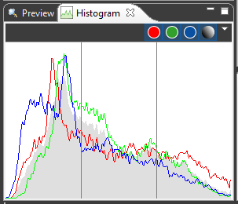

Histogram view
The histogram view shows the distribution of brightness values in the
different color channels. This information is derived from the thumbnail
images.
The Histogram view can be
obtained through Window>Show View>Histogram.
|

|
Context functions and view
actions:
- Dark background. Switch between dark and bright
background. Alternatively, click on the background.
- Center weighted. Image
parts in the center are taken into greater consideration.
- Proposals. Shows the results of a contrast and
brightness assessment.
- Red. Shows the
brightness distribution in the red channel.
- Green. Shows the
brightness distribution in the green channel.
- Blue. Shows the
brightness distribution in the blue channel.
- Grey. Shows the
overall brightness distribution.
- Configure captions.
Invokes an editor for configuring the caption line under the
histogram.
|